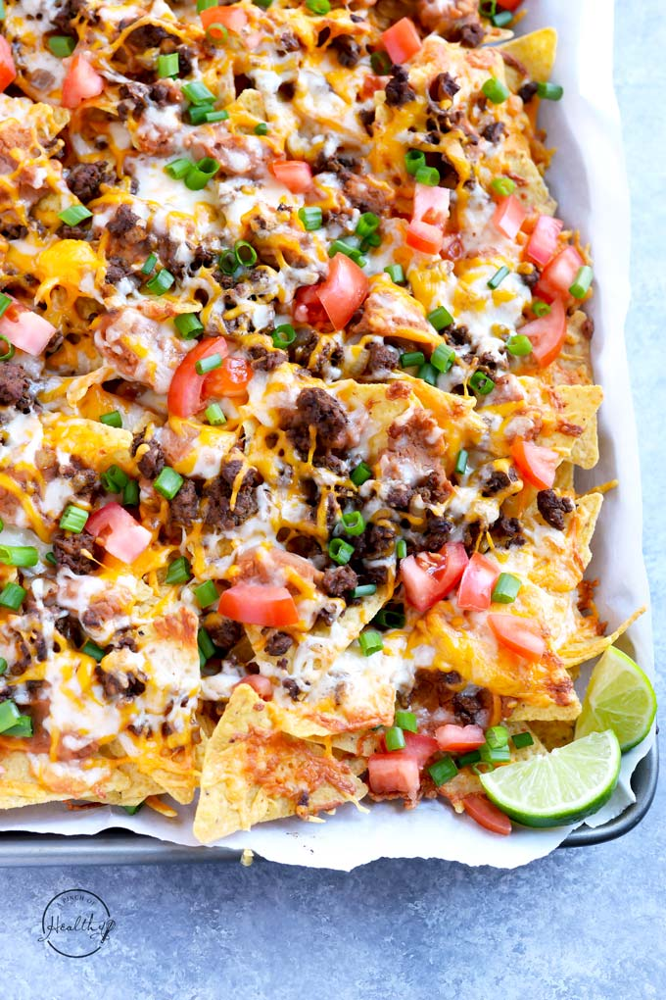

Nachos

This is a picture of some freshly made nachos
Nachos are a Mexican food consisting of fried tortilla chips or totopos covered with melted cheese or cheese sauce, as well as a variety of other toppings, often including meats, vegetables, and condiments such as salsa, guacamole, or sour cream
Ingredients
- Cheese
- Tortilla Chips
- Jalapenos
- Onions
- Beans
- Bell Pepper
- Sour Cream
- Guacamole
Steps
- Preheat oven to 400 degrees Fahrenheit. Line a baking sheet with parchment paper. Place handfuls of chips on the baking sheet and distribute evenly, minimizing the gaps between chips. Set aside.
- Sprinkle the prepared pan of chips generously and evenly with the beans, followed by the shredded cheese, bell pepper, crumbled feta and pickled jalapeños (use more if you really love jalapeños, less if you don’t). Bake until the cheese is melted and bubbling, about 9 to 13 minutes. Remove the nachos from the oven and set aside.
- While the nachos are baking, make the avocado sauce and prepare the garnishes
- Once the nachos are out of the oven, drizzle avocado sauce on top as shown—any extra can be served on the side.
Back to Main Menu
Back to Top